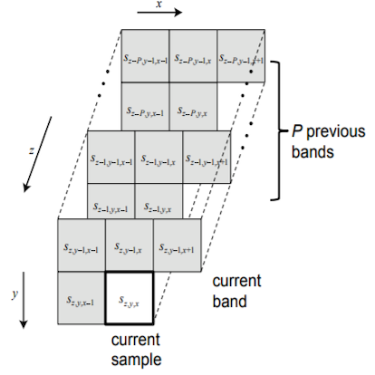
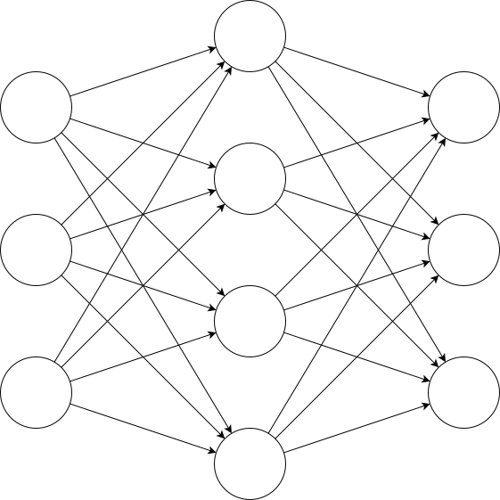

CCSDS hyperspectral image compression on FPGA
Team Anant, BITS Pilani, Dec 2017 - Apr 2020
- A sample adaptive linear compression algorithm was implemented using FPGA using a zynq-7000 SoC.
- Algorithm designed by Consusltative commitee for space data sciences.
- Completely pipelined datapath was developed for 3U nanosatellite with power and time optimisation.
- Involved design and simulation of complete datapath in Verilog RTL.

Implementation of Artificial Neural network on a Zynq-7000 SoC
Laboratory Project, BITS Pilani, Aug - Dec 2019
- 2-layer fully connected neural network implemented for non line-of-sight localisation in indoor enviroments.
- Complete implementation and training using Levenberg-Merquadt training algorithm done on chip.
- Non linear tansigmoid activation function of neurons was implemented using BRAM resources as LUTs.
- Computational latency for positions achieved to under 1.5ms.
- Total power consumed by neural network Programmable logic under 100mW(expected).
- Total training time of network to new set of parameters under 2s

Development of User-Space library for LED P10 panels
BITS Pilani, Jan-May 2019
- Raspberry Pi was used to create User-Space Library for cheap LED panels.
- Freetype was used to render text usign system OpenType or TrueType fonts
- Supports creation of long daisy chains of individual panels for larger displays
- Existing SPI hardware on Raspberry Pi was used to implement HUB-12 protocol used by panels
Design of TG based 3-input XOR gate
Analog and Digital VLSI design, BITS Pilani, Nov 2018
- Designed 3-input XOR gates using Transmision gate logic.
- Full custom layout using Cadence Virtuoso that passed DRC, LVS and PEX tests.
- Design was made usign 180nm technology and was tested for functioning at 1GHz
Implementing a Radix-4 booth multiplier
Analog and Digital VLSI design, BITS Pilani, Nov 2018
- 8-Bit raddix-4 booth multiplier implemented using behavioural description in Verilog RTL.
- Circuit was synthesised using
fsd0k_a_generec_core_1d0vtctechnology library. - Total power consumption less than 22μW expected from synthesis.
Calibration of Ultrasound based flow meter data acquisition unit
Efftronics Systems Private Limited, May-Jul 2018
- Ultrasonic flow meter developed by Efftronics for Urban Municipal Corporation to monitor for leaks in the water grid.
- DAUs to be connected via GSM into IoT framework.
- Undertook calibration of sensor modules to meet error margin requirements.
- Work involved debugging and developing firmware for Custom board developed by company.